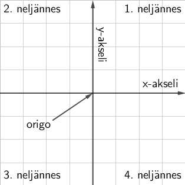

MA7 Jakso 4: Geometria 1
1. Koordinaatisto ja piste
Koordinaatisto on matemaattinen malli paikan ja mittasuhteiden ilmoittamiseen. Koordinaatistoja on paljon erilaisia, ja niitä käytetään esimerkiksi kartoissa ja paikannuksessa, tietokonepeleissä ja -grafiikassa sekä tilastotiedon ja datan esittämiseen erilaisten kuvaajien avulla.
Seitsemännellä luokalla harjoitellaan koordinaatiston piirtämistä sekä pisteen lisäämistä ja lukemista. Myöhemmin yläkoulun aikana koordinaatistoon piirretään funktioiden kuvaajia, kuten suoria ja paraabeleja. Muissa luonnontiedeaineissa tutkitaan ja piirretään kuvaajia esimerkiksi lämpötiloista, sähkövirrasta ja jännitteestä sekä erilaisista liikkeeseen liittyvistä suureista.
Koordinaatiston osat ja piirtäminen
Koordinaatisto muodostuu kahdesta keskenään kohtisuorasta lukusuorasta eli koordinaattiakselista. Vaaka-akselia kutsutaan \(\textsf{x}\)-akseliksi ja pystyakselia \(\textsf{y}\)-akseliksi. Koordinaattiakselien rajaamia alueita kutsutaan neljänneksiksi, ja numerointi tapahtuu alla olevan kuvan mukaisessa järjestyksessä.
Koordinaatistoa piirrettäessä piirretään akseleiden päähän (oikealle ja ylös) nuolet kuvaamaan akselien kasvusuuntaa. Akselit tulee aina nimetä, ja akseleiden jako merkitä näkyviin. Jaolla tarkoitetaan
Koordinaatiston piirtämisen vaiheet:
- Arvioi tarvitsemasi koordinaatiston koko
- Piirrä koordinaattiakselit
- Merkitse nuolet (oikealle ja ylös)
- Nimeä akselit (x ja y)
- Merkitse jako (mitä pituutta ruutu kuvaa)
Piste koordinaatistossa
Sijainti koordinaatistossa eli yksittäinen piste ilmaistaan vaaka- ja pystysuorana siirtymänä akselien leikkauspisteestä eli origosta (engl. origin: alku, lähde). Pisteet nimetään aina isolla kirjaimella.
Siirtymiä kutsutaan akselien mukaisesti \(\textsf{x}\)- ja \(\textsf{y}\)-koordinaateiksi, ja pisteen koordinaatit kirjoitetaan siten, että sulkujen sisään luetellaan pilkulla eroteltuna \(\textsf{x}\)- ja \(\textsf{y}\)-koordinaatti. Esitysjärjestys on \(\textsf{(x,y)}\), eli sama kuin kirjainten aakkosjärjestys. Jos jompi kumpi koordinaateista on desimaaliluku, käytetään koordinaattien erottamiseen puolipistettä (;).
Pisteen lisääminen koordinaatistoon:
- Lähde liikkeelle origosta (akselien risteyskohta)
- Liiku x-akselilla x-koordinaatin verran (vaakasuunta)
- Liiku y-akselilla y-koordinaatin verran (pystysuunta)
- Piirrä rasti pisteen merkiksi
- Nimeä piste kirjoittamalla pisteen viereen sen nimi (muista iso kirjain)
2. Erilaisia viivoja
Kun useita pisteitä merkitään peräkkäin saadaan erilaisia viivoja. Hyödyllisimpiä näistä ovat suorat (engl. line), puolisuorat (engl. ray) sekä janat (engl. line segment). 7. luokalla tutustutaan viivojen lisäksi niiden välisiin kulmiin, leikkauspisteisiin sekä ominaisuuksiin osana erilaisia kuvioita.
Suora
Suora on äärettömän pitkä suora viiva, joka määritellään ja nimetään kahden pisteen avulla, joiden kautta se kulkee. Suoralle voidaan antaa myös erillinen nimi pienellä kirjaimella. Tätä käytetään usein kun halutaan puhua yleisesti jostakin suorasta, ottamatta kantaa sen kauttakulkupisteisiin.

Puolisuora
Puolisuora on kuten suora, mutta sillä on yksi päätepiste. Puolisuora määritellän ja nimetään päätepisteen ja yhden kauttakulkupisteen avulla. Nimeämisessä kirjoitetaan ensin päätepiste ja toisena kauttakulkupiste. Joskus puolisuorasta käytetään nimeä säde, mutta tätä ei pidä sekoittaa ympyrän säteeseen.

Jana
Jana on suora viiva, jolla on kaksi päätepistettä. Jana määritellään ja nimetään päätepisteiden avulla. Janan pituus voidaan mitata.

Yhdensuuntainen
Kaksi suoraa ovat yhdensuuntaisia (engl. parallel) , jos ne eivät (koskaan) leikkaa toisiaan. Esimerkiksi suorien \(\textsf{s}\) ja \(\textsf{k}\) yhdensuuntaisuutta merkitään \(\textsf{s} \parallel \textsf{k}\).
Piirtokolmion avulla voidaan piirtää yhdensuuntaisia viivoja käyttämällä apuna piirtokolmion apuviivoja, jotka ovat kolmion pitkän sivun kanssa yhdensuuntaisia.
Aseta kynä pisteen kohdalle, jonka kautta yhdensuuntaisen viivan tulisi kulkea. Tämän jälkeen aseta kolmioviivaimen apuviivat alkuperäisen suoran kanssa samaan suuntaan kuvan osoittamalla tavalla ja piirrä viiva.

Kohtisuora eli normaali
Kohtisuora eli normaali (engl. perpendicular) tarkoittaa \(\textsf{90}^\circ\) kulmassa olevaa viivaa. Jos suorat s ja n ovat kohtisuorassa toisiaan vastaan, voidaan merkitä \(\textsf{s} \perp \textsf{n}\).
Piirtokolmion avulla voidaan piirtää kohtisuoria viivoja käyttämällä apuna piirtokolmion apuviivaa, joka on kohtisuorassa kolmion pitkää sivua vastaan.
Aseta kynä jälleen pisteen kohdalle, jonka kautta haluat normaalin piirtää. Tämän jälkeen aseta kolmioviivaimen apuviiva alkuperäisen suoran kanssa päällekkäin kuvan osoittamalla tavalla ja piirrä viiva.

Pisteen etäisyys suorasta
Pisteen etäisyys suorasta on sen lyhin etäisyys eli sen kohtisuora etäisyys. Kohtisuora etäisyys saadaan piirtämällä suoralle normaali (eli kohtisuora) pisteen kautta, ja mittaamalla muodostuneen janan pituus. Alla olevassa demonstraatiossa on kuvattu esimerkki pisteen ja suoran välisen etäisyyden mittaamisesta piirtokolmion avulla.
Lisätietoa: Suoran yhtälö
Suora voidaan määritellä myös muuttujalausekkeen avulla. Lähtöajatuksena on muodostaa y-koordinaatille laskukaava, missä muuttujana on x-koordinaatti. Tällä tavoin luodaan x- ja y-koordinaatin välille riippuvuus eli sääntö, jolla x- ja y-koordinaatit riippuvat toisistaan. Suora on riippuvuuksista yksinkertaisin, mutta käyttämällä kerto- ja yhteenlaskun lisäksi muitakin matematiikassa opittavia työkaluja saadaan aikaan monimutkaisempia riippuvuuksia.

Suoran yhtälössä on aina kaksi termiä. Ensimmäisen termin kerrointa kutsutaan suoran kulmakertoimeksi. Toista termiä kutsutaan tuttuun tapaan vakiotermiksi. Molemmilla käsitteillä on tärkeä ja havainnollinen rooli suoran sijainnissa koordinaatistossa. Alla olevissa esimerkeissä kulmakerroin on merkitty punaisella ja vakiotermi sinisellä värillä.
| \(\mathsf{y = \color{red}{2}x \color{blue}{+\:1}}\qquad\) | \(\mathsf{y = \color{red}{-5}x \color{blue}{+\:5}}\qquad\) | \(\mathsf{y = \color{red}{3}x \color{blue}{-\:2}}\) |
Erityisesti muistetaan kertoimet 1 ja 0
| \(\mathsf{y = x \color{blue}{+\:2}}\qquad\) | \(\color{red}{\textsf{Kulmakerroin: 1}}\qquad\) | \(\color{blue}{\textsf{Vakiotermi: 2}}\) |
| \(\mathsf{y = \color{blue}{-3}}\qquad\) | \(\color{red}{\textsf{Kulmakerroin: 0}}\qquad\) | \(\color{blue}{\textsf{Vakiotermi: -3}}\) |
| \(\mathsf{y = \color{red}{4}x}\qquad\) | \(\color{red}{\textsf{Kulmakerroin: 4}}\qquad\) | \(\color{blue}{\textsf{Vakiotermi: 0}}\) |
Kulmakerroin
Kulmakerroin kertoo suoran kaltevuuden. Mittayksikkönä voidaan ajatella käytettävän y-akselin suuntaista muutosta, kun x-koordinaatin suuruus kasvaa yhdellä. Toisin sanoen, piirretään suoralle (mihin tahansa) piste, liikutaan yhden verran oikealle, ja lasketaan kuinka paljon tulee siirtyä ylös (tai alas), jotta päästään takaisin suoralle. Alla oleva kuva havainnollistaa kulmakertoimen \(\mathsf{k}\) määrittämistä suoran kuvaajasta.

Tarkalleen ottaen kulmakerroin määritellään y-akselin suuntaisen siirtymän \(\mathsf{\Delta y}\) ja x-akselin suuntaisen siirtymän \(\mathsf{\Delta x}\) osamääränä. Alla olevasta kuvassa on esimerkkinä kulmakertoimen \(\textsf{k}\) määrittäminen tällä tavoin.

Jos kulmakerroin on positiivinen, sanotaan että suora on nouseva. Vastaavasti kulmakertoimen ollessa negatiivinen, suora on laskeva.
Vakiotermi
Vakiotermi kertoo suoran ja y-akselin leikkauskohdan. Toisin sanoen vakiotermi on suoran ja y-akselin leikkauspisteen y-koordinaatti, sillä x-koordinaattihan on tällöin aina 0. Vakiotermiä muuttamalla voidaan siis muuttaa suoran sijaintia y-akselin suunnassa. Alla olevassa kuvassa on esitetty yhdensuuntaisia suoria, joiden vakiotermi on eri.

3. Kulma
Kulma on kahden suoran viivan välinen suuntaero. Pistettä, jossa viivat yhtyvät kutsutaan kulman kärjeksi. Kärjestä katsottuna kulmaa kohti, voidaan viivat nimetä kulman vasemmaksi ja oikeaksi kyljeksi. Kylkien väliin jäävää aluetta kutsutaan aukeamaksi. Kyljet muodostavat aina kaksi kulmaa, ja tarkasteltava kulma merkitään kuvaan kaaren avulla.

Kulman nimeäminen
Kreikkalaiset aakkoset
Kulma nimetään usein pienillä kreikkalaisilla aakkosilla alfa \(\alpha\), beeta \(\beta\), gamma \(\gamma\) tai delta \(\delta\). Tällöin kirjainta voidaan käyttää helposti esimerkiksi laskuissa muuttujana. Alla on esitetty animaatioina ohjeet eri kirjainten piirtämiseen selityksineen.
 Alfa-kirjain \(\LARGE \alpha\) voidaan piirtää kuin rasti, jossa on lenkki vasemmalla puolella.
Alfa-kirjain \(\LARGE \alpha\) voidaan piirtää kuin rasti, jossa on lenkki vasemmalla puolella.
 Beeta-kirjain \(\LARGE \beta\) voidaan piirtää kuin iso B-kirjain, jonka pystyviiva jatkuu alaspäin hännäksi. Selkeyden vuoksi kaaret voidaan jättää irti pystyviivasta.
Beeta-kirjain \(\LARGE \beta\) voidaan piirtää kuin iso B-kirjain, jonka pystyviiva jatkuu alaspäin hännäksi. Selkeyden vuoksi kaaret voidaan jättää irti pystyviivasta.
 Gamma-kirjain \(\LARGE \gamma\) voidaan piirtää lenkkinä kuin alfa-kirjain, mutta lenkki tuleekin alas. Erotuksena esimerkiksi x- tai y-kirjaimiin loppuun voidaan tehdä pieni lenkki.
Gamma-kirjain \(\LARGE \gamma\) voidaan piirtää lenkkinä kuin alfa-kirjain, mutta lenkki tuleekin alas. Erotuksena esimerkiksi x- tai y-kirjaimiin loppuun voidaan tehdä pieni lenkki.
 Delta-kirjain \(\LARGE \delta\) voidaan piirtää kuin omena, jonka varsi voi olla kaareva tai muodostaa terävämmän kulman ylhäällä.
Delta-kirjain \(\LARGE \delta\) voidaan piirtää kuin omena, jonka varsi voi olla kaareva tai muodostaa terävämmän kulman ylhäällä.
Kolmen pisteen avulla
Toinen tapa nimetä kulma on käyttää kolmea pistettä seuraavassa järjestyksessä:
- Oikean kyljen piste
- Kärkipiste
- Vasemman kyljen piste
Kärkipisteen avulla
Kolmas tapa kulman nimeämiseen on käyttää vain kärkipistettä, mutta tällöin saattaa tulla sekaannus, jos kyseinen piste on kärkipisteenä muillekkin kulmille.

Kulman suuruus ja luokittelu
Kulman yksikkö on aste. Täysi kierros on 360 astetta eli \(\textsf{360}^\circ\).
Erilaiset kulmat luokitellaan sen suuruuden mukaisesti. Huomaa, että suoraa kulmaa merkitään kaaren sijaan neliöllä.

Alla olevan animaation avulla voit tutkia tarkemmin eri kulmien luokittelua.
Ristikulma ja vieruskulma
Vieruskulmilla on yhteinen kylki, ja ne muodostavat yhdessä oikokulman.
Ristikulmat muodostuvat leikkauspisteen vastakkaisille puolille, kun kaksi suoraa leikkaavat toisensa. Ristikulmat ovat keskenään yhtä suuret.

Koska oikokulma on \(\textsf{180}^\circ\), niin kulma \(\alpha\) saadaan laskettua vähentämällä toinen vieruskulmista oikokulmasta.
\(\alpha = \textsf{180}^\circ − \textsf{45}^\circ = \textsf{135}^\circ\)
Koska ristikulmat ovat yhtä suuret, niin \(\beta = \textsf{47}^\circ\).
Samankohtaiset kulmat
Kun suora leikkaa kahta muuta suoraa, muodostuu leikkauskohtiin neljä paria samankohtaisia kulmia. Samankohtaiset kulmat ovat yhtä suuret, jos leikattavat suorat ovat yhdensuuntaisia.

Kuvassa suora \(\textsf{s}\) leikkaa suoria \(\textsf{k}\), \(\textsf{p}\) ja \(\textsf{m}\), joista kaksi jälkimmäistä ovat yhdensuuntaisia, eli \(\textsf{p}\parallel \textsf{m}\). Tällöin leikkauspisteisiin muodostuneet samankohtaiset kulmat ovat yhtä suuria.
4. Kulman mittaaminen ja piirtäminen
Kulmia voidaan mitata ja piirtää piirtokolmion avulla. Tärkeintä on löytää piirtokolmiosta pitkän sivun puolivälissä oleva nollakohta sekä kaksi kaarevaa asteikkoa kulman mittaamista varten. Huomaa apuviivat 90 ja 45 asteen mittaamiseen. Katsele ympärillesi, ja huomaat, että joka puolella näkyy 90 asteen 45 asteen sekä 135 asteen kulmia. Ei ole siis yllätys, että juuri näihin kulmiin löytyy aikaa säästäviä apuviivoja.
Kulman mittaaminen
Kulma mitataan asettamalla piirtokolmio toiselle kyljelle siten, että piirtokolmion nollakohta on kulman kärjessä. Tämän jälkeen luetaan sopivalta asteikolta kulman arvo.

Asteikko valitaan sen mukaan, ollaanko mittaamassa terävää vai tylppää kulmaa. Jos kulma on terävä, niin valitaan asteikko, joka antaa 90 astetta pienempiä lukemia, ja tylppää kulmaa mitattaessa vastaavasti kulman suuruus on yli 90 astetta.
Kulman piirtäminen
Kulman piirtäminen voidaan jakaa seuraaviin vaiheisiin:
- Piirrä toinen kulman kylki.
- Aseta piirtokolmion nollakohta kulman kärkeen.
- Merkitse apupiste halutun kulman kohdalle.
- Piirrä toinen kylki lähtien kärjestä kohti apupistettä.
5. Ympyrä
Pyörä on ollut kiistämättä tärkeä keksintö ihmiskunnan historiassa. Ympyrä liittyy kuitenkin pyöreän muodon lisäksi kaikenlaiseen pyörivään liikkeeseen, joten ympyrään liittyvien perusasioiden ymmärtäminen on tärkeää.
7. luokalla tutustutaan ympyrän osiin, ja harjoitellaan sen piirtämistä harpin avulla. Harppia käytetään myös geometrisessa piirtämisessä, joten sen käyttöä harjoitellaan myös normaalien sekä kulmanpuolittajien piirtämisessä.
8. luokalla opitaan ympyrän kehän pituuden ja pinta-alan laskeminen säteen avulla. 9. luokalla ympyrää käytetään pohjana monenlaisille kappaleille (ympyrälieriö, ympyräkartio,...) ja pyöräytetään ympyrä palloksi.
Ympyrän osat
Ympyrä muodostuu keskipisteestä, ja siitä tietyn säteen etäisyydellä olevista kehän pisteistä. Jänne on jana, joka yhdistää kaksi kehän pistettä. Jänne, joka kulkee keskipisteen kautta on nimeltään halkaisija. Halkaisijan voidaan ajatella olevan kaksi perättäistä sädettä. Näin ollen säde on helppo laskea, jos tunnetaan halkaisija ja päin vastoin.
Kahden säteen rajaamaa aluetta kutsutaan sektoriksi. Sektori rajaa ympyrän kehältä kaaren, joka on siis kehän osa. Säteiden välistä kulmaa kutsutaan keskuskulmaksi, koska sen kärki on ympyrän keskipisteessä.

Ympyrän piirtäminen
Ympyrän piirtäminen voidaan jakaa seuraaviin viiteen vaiheeseen:
- Piirrä keskipiste.
- Aseta harpin piikki keskipisteeseen
- Mittaa harpin leveydeksi haluttu säde.
- Piirrä ympyrä.
- Pidä piikki paikallaan, ja liikuta kynää. Älä päästä sädettä muuttumaan. Tämä vaatii harjoittelua.
- Piirrä ja merkitse lopuksi tehtävänannossa annettu pituus (säde tai halkaisija) näkyviin.
Kehäkulma ja keskuskulma
Ympyrän sisään voidaan piirtää erilaisia kulmia vaikka ympyrässä itsessään ei kulmia olekkaan. Edellä esiteltiin sektorin yhteydessä jo keskuskulma, jonka kärki on siis ympyrän keskipisteessä, ja kyljet ovat ympyrän säteitä.
Kehäkulman kärki on on nimensä mukaisesti ympyrän kehällä. Kehäkulmaa vastaa aina jokin keskuskulma, ja niiden kyljet lähetävät samoista kehän pisteistä. Keskuskulman \(\alpha\) ja kehäkulman \(\beta\) suuruudet riippuvat toisistaan ns. kehäkulmalauseen mukaisesti.
\(\alpha = \textsf{2} \cdot \beta\)
Eli keskuskulma \(\alpha\) on aina kaksinkertainen sitä vastaavaan kehäkulmaan \(\beta\). Vastaavasti
\(\beta = \dfrac{\alpha}{\textsf{2}}\)
eli kehäkulma on aina puolet keskuskulmasta. Voit tutkia asiaa alla olevan animaation avulla.
Thaleen lause
Kehäkulmalauseen erikoistapausta, jossa keskuskulma on \(\textsf{180}^\circ\) ja kehäkulma on \(\textsf{90}^\circ\) kutsutaan Thaleen lauseeksi. Thales oli yksi Kreikan perinteen seitsemästä viisaasta, ja hänen sanotaan esittäneen ja todistaneen mm. seuraavan lauseen:
"Puoliympyrän kaaren sisältämä kulma on suora."
Matematiikassa käytetään sanalla "lause" tarkoitetaan väitettä, joka on tosi. Väite pitää todistaa (eli perustella aukottomasti), jotta sitä voidaan pitää totena.
Lisätietoa: Suoran ja ympyrän leikkauspisteet
Esimerkiksi tietokonegrafiikassa on tärkeätä osata tutkia erilaisten suorien ja kappaleiden välisiä leikkauksia. On kyse sitten valonsäteestä 3D-maailmassa tai ammuksen lentorata tietokonepelissä, tietokoneen on pystyttävä selvittämään leikkaako esimerkiksi suora ympyrän, ja kuinka monta kertaa se tapahtuu. Tutustutaan tähän ongelmaan hieman 7. luokan matematiikan keinoin.
Kuvassa on ympyrä, jonka keskipiste on \(\textsf{A}\) ja säde \(\textsf{r}\) sekä kolme suoraa \(\textsf{p}\), \(\textsf{s}\) ja \(\textsf{t}\).

Kaksi leikkauspistettä - Suora \(\textsf{s}\) kulkee ympyrän läpi, joten se leikkaa ympyrän kahdessa pisteessä. Näin ollen ympyrän keskipisteen \(\textsf{A}\) etäisyys suorasta \(\textsf{s}\) on pienempi kuin ympyrän säde \(\textsf{r}\).
Yksi leikkauspiste - Suora \(\textsf{t}\) hipaisee ympyrää vain yhdessä pisteessä. Näin ollen ympyrän keskipisteen \(\textsf{A}\) etäisyys suorasta \(\textsf{p}\) on yhtä suuri kuin ympyrän säde. Tällaista suoraa kutsutaan ympyrän tangentiksi.
Ei leikkauspisteitä - Suora \(\textsf{p}\) kulkee ympyrän ohi, joten sillä ei ole ympyrän kanssa lainkaan leikkauspisteitä. Näin ollen ympyrän keskipisteen \(\textsf{A}\) etäisyys suorasta \(\textsf{p}\) on suurempi kuin ympyrän säde \(\textsf{r}\).
Lisätietoa: Tangenttikulma
Jos ympyrälle piirretään kaksi tangenttia (erisuuntaisia), muodostuu tangenttien leikkauspisteeseen tangenttikulma. Tangenttien ja ympyrän leikkaupisteistä piirretyt säteet muodostavat keskuskulman. Keskuskulma ja tangenttikulma riippuvat toisistaan siten, että ne ovat aina yhteensä \(\mathsf{180^\circ}\). Alla olevan demonstaation avulla voit tutkia tangenttia ja tangenttikulmaa tarkemmin.
6. Geometrinen piirtäminen
Geometrisella piirtämisellä (tai geometrisella konstruktiotehtävällä) tarkoitetaan piirtämistä harpin ja mitta-asteettoman viivaimen avulla. Viivainta käytetään siis vain suorien viivojen piirtämiseen eikä sillä mitata esimerkiksi pituuksia tai kulmien suuruuksia.
Keskinormaalin piirtäminen janalle
Keskinormaalilla tarkoitetaan normaalia (kohtisuoraa), joka kulkee janan keskeltä, eli jakaa janan kahteen yhtä suureen osaan. Tätä menetelmää voidaan käyttää myös janan keskipisteen etsimiseen. Alla oleva demonstraatio kuvaa keskinormaalin piirtämistä geometrisesti.
Kulman puolittaminen
Kulman puolittamisella tarkoitetaan nimensä mukaisesti jonkin tunnetun kulman puolittamista, eli jakamista kahdeksi yhtä suureksi kulmaksi. Alla oleva demonstraatio kuvaa kulman puolittamista geometrisesti.
Janan siirtäminen
Jana voidaan siirtää geometrisesti niin, että sen suuruus ja suunta säilyvät. Alla oleva demonstraatio kuvaa janan siirtämistä geometrisesti.
Kulman siirtäminen
Kulma voidaan siirtää geometrisesti niin, että sen suuruus säilyy. Uudesta kulmasta tulee tuntea toinen kylki ja kärkipiste. Muutoin uuden kulman voi siirtää vaikka toiselle paperille. Alla oleva demonstraatio kuvaa kulman siirtämistä geometrisesti.
Tangentin piirtäminen
Alla oleva demonstraatio kuvaa tangentin piirtämistä ympyrän kehällä olevaan pisteeseen geometrisesti.